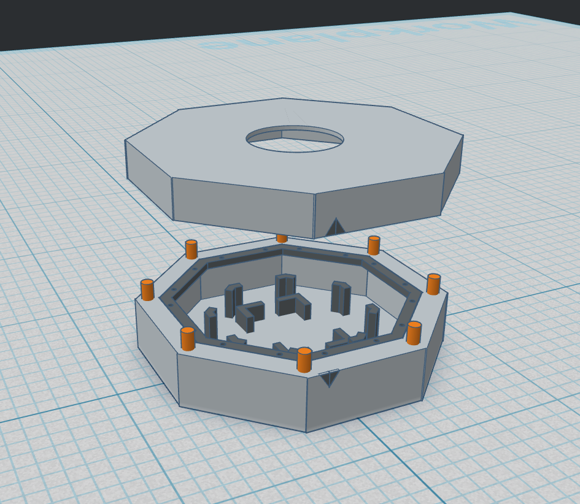
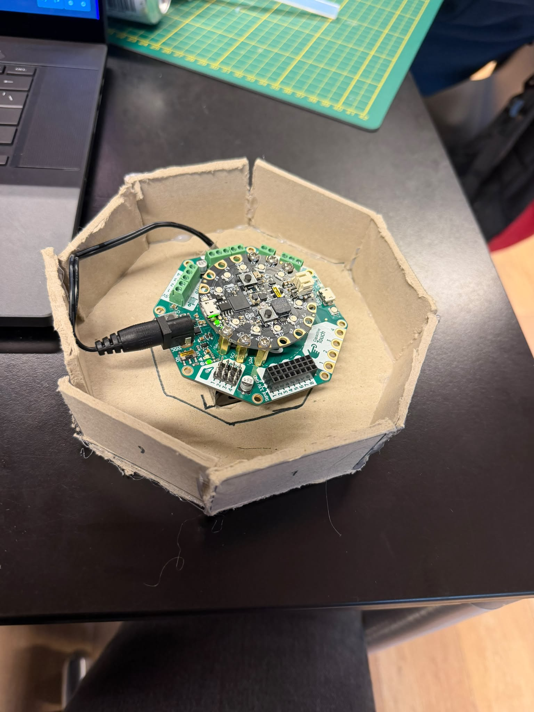
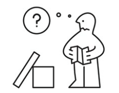

Over: Octo-bot
De know hows voor de Octo-bot.
De octo-bot
Dit is het eerste prototype van onze octo bot. Hierin kan je duidelijk zien dat er best een hoop is veranderd in het eindproduct.

Het prototype
Het prototype is gemaakt van hout en heeft een simpele structuur. Het is een basisversie van de octo-bot, die nog veel verbeterd kan worden.

De handleiding
Om de octo-bot te gebruiken heb je natuurlijk instructies nodig. vandaar bij deze de octo-bot instructies.
1. Als u uw Octo-Bot binnen heeft hoeft U alleen de dubbelzijdig teep weg te halen van de achterkant om hem daarna op te plakken aan uw deur.
2. geef de Octo-Bot een paar batterijen.
3. U kunt uw eigen pins in de bot steken en dan is hij volledig klaar voor gebruik.

Meet the team
Projectleider en Main-webdeveloper
Main-codeerder Octo-bot
Main-webdeveloper
Main-designer Octo-bot